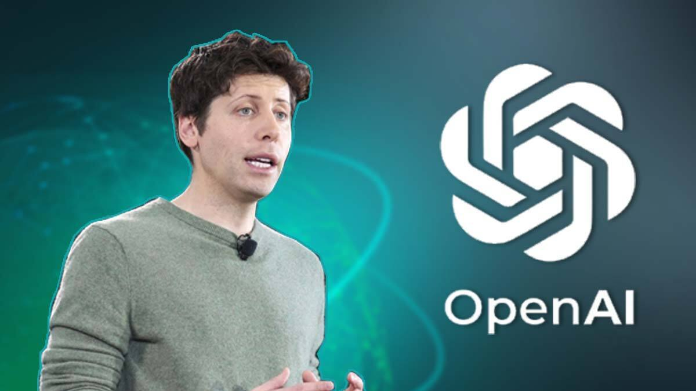

Welcome to this tribute page dedicated to Sam Altman, a remarkable individual who has left an indelible mark on the world of technology and entrepreneurship. In these paragraphs, I'll share my admiration for him, highlighting his extraordinary qualities and accomplishments.
Sam Altman is a visionary leader whose ability to inspire and lead by example has always captivated many. Born on April 22, 1985, in Chicago, Illinois, Sam demonstrated an early passion for technology and innovation. His journey into the tech world began when he co-founded Loopt, a location-based social networking app, during his time at Stanford University.
What sets Sam Altman apart is his genuine curiosity and relentless pursuit of knowledge. He joined
Y Combinator as a co-founder in 2014, and later became its president, playing a pivotal
role in shaping the startup landscape. Under his leadership, Y Combinator became synonymous with startup
success, providing mentorship and funding to a myriad of successful ventures.
Sam Altman's impact expanded further when he joined OpenAI, an artificial intelligence research laboratory, as its co-chairman in 2019. His commitment to advancing AI in a safe and ethical manner reflects his dedication to ensuring that technology benefits humanity as a whole.
In addition to his professional accomplishments, Sam Altman is known for his forward-thinking ideas and his commitment to making the world a better place. Whether it's his thoughts on artificial intelligence, his support for universal basic income, or his advocacy for ethical technology, Sam Altman consistently pushes the boundaries of what is possible, leaving an indelible mark on the world.